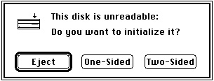
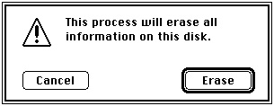
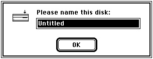
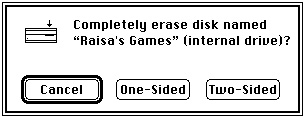

The Disk Initialization User Interface
The Finder and the Standard File Package both handle disk-inserted events for uninitialized disks by presenting a disk initialization dialog box asking the user whether the disk should be ejected or initialized. Your application too can easily call a Disk Initialization Manager routine that generates such a dialog box when the user inserts an invalid disk. Figure 5-1 illustrates one configuration of the dialog box.Figure 5-1 The disk initialization dialog box

The appearance of the disk initialization dialog box changes to reflect changing conditions. For example, the icon changes to show which drive contains the disk. Also, the text of the dialog box changes according to what is wrong with the disk. The text might read "This is not a Macintosh disk" if the Disk Initialization Manager detects that the disk has been formatted for use on another operating system. Or, it might notify the user that a high-density disk can be used only on an Apple SuperDrive. Finally, if a user inserts a single-sided disk into any disk drive, or a high-density disk into a high-density disk drive, then the Disk Initialization Manager changes the buttons in the dialog box, as illustrated in Figure 5-2, because such disks can be formatted in only one way.
Figure 5-2 Alternate buttons for the disk initialization dialog box
Regardless of the initial appearance of the disk initialization dialog box, it disappears if the user clicks Eject or Cancel. If, however, the user decides to initialize the disk, the text in the dialog box changes to warn the user that initialization erases any previous data on the disk, as illustrated in Figure 5-3.
Figure 5-3 The disk initialization warning

Finally, if the user decides to initialize the disk, the contents of the dialog box change so that the user can name the new disk, as illustrated in Figure 5-4.
Figure 5-4 The disk naming dialog box

After the user names the disk, the Disk Initialization Manager attempts to initialize it.
If an error occurs and the initialization fails, an alert box notifies the user, and the disk
is ejected.The Disk Initialization Manager also provides a mechanism for using the standard
interface to reinitialize disks that are already formatted. (This mechanism is useful, for example, when the user wants to reinitialize single-sided disks as double-sided disks.) The Finder takes advantage of this mechanism with its Erase Disk command, illustrated in Figure 5-5. After the user selects the erase operation from this dialog box, the reinitialization begins immediately, without further warnings. If desired, your application can use this same standard interface to allow users to reinitialize mounted disks (other than the startup volume). Your application can customize the text to be displayed in such a
dialog box. Note that only a few utility applications actually need to provide users with this capability.Figure 5-5 The Finder's disk erasing dialog box

If you are writing a utility program such as a disk-copying application, you might wish to initialize new disks or reinitialize valid disks without displaying the standard disk initialization dialog box. For example, your application might allow users to initialize multiple disks without having to respond to the standard dialog box each time. The Disk Initialization Manager provides low-level routines that allow you to do so. Unless you are writing a utility program of this type, you don't need to use these routines.